02 · Home Lab
O laboratórioThe lab
Três máquinas virtuais numa rede isolada. O Kali ataca, o Windows 11 é a vítima e registra tudo com o Sysmon, e o Wazuh (SIEM) recebe os logs, correlaciona e gera alertas. Gire o modelo com o mouse e clique em cada máquina.Three virtual machines on an isolated network. Kali attacks, Windows 11 is the victim and records everything with Sysmon, and Wazuh (SIEM) receives the logs, correlates them and raises alerts. Drag to rotate and click each machine.
02 · Cenário 102 · Scenario 1
Brute force de senha via SMB: replay 3DSMB password brute force: 3D replay
Os 19 alertas reais gerados pelo Wazuh em 14/11/2026, entre 05:55 e 05:59 UTC, reproduzidos na ordem em que aconteceram. Aperte ▶ ou clique em qualquer evento da lista para ver o que ele significa e o log original.The 19 real alerts Wazuh raised on 2026-11-14 between 05:55 and 05:59 UTC, replayed in the order they happened. Press ▶ or click any event in the list to see what it means and the original log.
02 · Cenário 102 · Scenario 1
A investigaçãoThe investigation
📄 Relatório de incidente (PDF, 1 página)Incident report (PDF, 1 page, in Portuguese)
Eu refiz o ataque (16/11/2026)I re-ran the attack (2026-11-16)
ℹ️ A primeira execução (14/11, a do replay acima) foi feita com apoio de IA. Para dominar o cenário, refiz o ataque pessoalmente no Kali em 16/11, e o resultado se repetiu.
1Preparar a lista de senhas e fazer o reconhecimento
Criei uma lista com 9 senhas comuns erradas e a certa no final (senhas.txt) e rodei nxc smb 10.0.10.20, sem senha nenhuma. Só esse "bater na porta" já revelou:
- Porta 445 aberta e o nome da máquina (
SOC-WIN11); - a versão exata do Windows (build 26100), útil para procurar vulnerabilidades;
domainigual ao nome da máquina: as contas são locais, por isso o ataque usa--local-auth;signing:True(protege contra relay, não contra adivinhar senha) eSMBv1:None(o protocolo antigo do WannaCry está desligado).
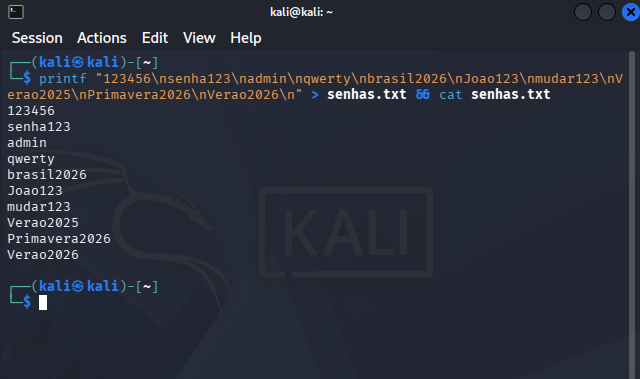
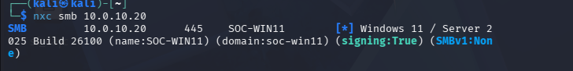
2O ataque: a ferramenta mostrou erro, mas o log mostrou a verdade
Rodei nxc smb 10.0.10.20 -u joao.teste -p senhas.txt --local-auth, anotando o horário em UTC antes e depois. As 9 primeiras tentativas apareceram como Connection Error … timed out, e a última como [+] SOC-WIN11\joao.teste:Verao2026.
Por que "timeout"?
O Windows 11 24H2 tem um limitador de autenticação SMB: segura cada resposta de senha errada por ~2 s, e o NetExec entende a demora como erro. Mas as tentativas chegaram: o Windows registrou as 9 como senha errada (evento 4625, subStatus 0xC000006A). A saída da ferramenta não é a verdade; o log é.
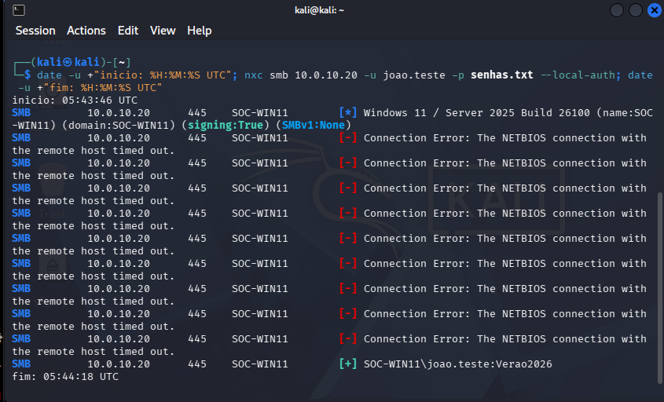
3No Wazuh: o mesmo padrão da primeira vez
Consulta agent.name:SOC-Win11 and data.win.eventdata.ipAddress:10.0.10.30: 12 eventos. Horários do Windows (UTC):
| Horário | Regra | O que aconteceu |
|---|---|---|
| 05:42:40 | 92652 | Login anônimo: o comando de reconhecimento |
| 05:44:39 | 92652 | Novo login anônimo: início do ataque |
| 05:44:51 → 05:45:09 | 60122 + 60204 | 9 falhas, uma a cada ~2,2 s; a 8ª virou o alerta 60204 (nível 10) |
| 05:45:11 | 92652 | ✅ Login com sucesso como joao.teste (NTLM V2), seguido de logoff |
Um detalhe que só apareceu refazendo
O Kali marcou o início às 05:43:46, mas o primeiro evento no Windows é de 05:44:39: o relógio do Windows estava ~53 s adiantado. Em uma empresa, todos os equipamentos sincronizam com o mesmo servidor de horário (NTP); sem isso, cruzar logs de máquinas diferentes vira adivinhação.
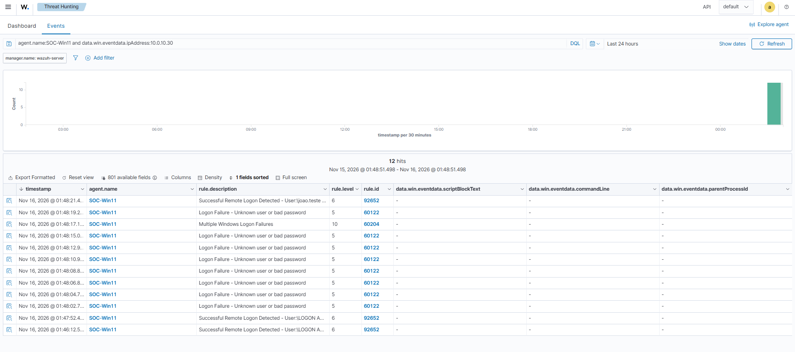
ℹ️ The first run (Nov 14, the one in the replay above) was done with AI assistance. To master the scenario, I re-ran the attack myself from Kali on Nov 16, and the result repeated.
1Build the password list and do reconnaissance
I created a list with 9 common wrong passwords and the right one last (senhas.txt) and ran nxc smb 10.0.10.20, with no password at all. That simple "knock on the door" already revealed:
- Port 445 open and the machine name (
SOC-WIN11); - the exact Windows version (build 26100), useful for looking up vulnerabilities;
domainequal to the machine name: the accounts are local, hence--local-auth;signing:True(protects against relay, not against password guessing) andSMBv1:None(the old WannaCry-era protocol is off).
2The attack: the tool showed errors, the log showed the truth
I ran nxc smb 10.0.10.20 -u joao.teste -p senhas.txt --local-auth, noting the UTC time before and after. The first 9 attempts showed as Connection Error … timed out, and the last one as [+] SOC-WIN11\joao.teste:Verao2026.
Why "timeout"?
Windows 11 24H2 has an SMB authentication rate limiter: it holds each wrong-password response for ~2 s, and NetExec reads the delay as an error. But the attempts did arrive: Windows logged all 9 as wrong passwords (event 4625, subStatus 0xC000006A). The tool's output is not the truth; the log is.
3In Wazuh: the same pattern as the first time
Query agent.name:SOC-Win11 and data.win.eventdata.ipAddress:10.0.10.30: 12 events. Windows times (UTC):
| Time | Rule | What happened |
|---|---|---|
| 05:42:40 | 92652 | Anonymous logon: the reconnaissance command |
| 05:44:39 | 92652 | Another anonymous logon: the attack starts |
| 05:44:51 → 05:45:09 | 60122 + 60204 | 9 failures, one every ~2.2 s; the 8th became alert 60204 (level 10) |
| 05:45:11 | 92652 | ✅ Successful logon as joao.teste (NTLM V2), followed by logoff |
A detail that only showed up the second time
Kali logged the start at 05:43:46, but the first Windows event is from 05:44:39: the Windows clock was ~53 s ahead. In a company every device syncs to the same time server (NTP); without it, correlating logs from different machines becomes guesswork.
As perguntas que um analista N1 respondeThe questions a Tier 1 analyst answers
1. Foi mesmo um brute force?1. Was it really a brute force?
Sim. Foram 9 falhas de login (evento 4625) em ~16 segundos, todas do mesmo IP e contra a mesma conta, uma a cada ~2 s. Nenhum humano digitando produz esse ritmo: é automação.Yes. 9 failed logons (event 4625) in ~16 seconds, all from the same IP against the same account, one every ~2 s. No human typing produces that rhythm: it is automated.
2. O ataque teve sucesso?2. Did the attack succeed?
Sim, e esse é o ponto mais importante. 2 segundos depois da última falha, o mesmo IP fez login com sucesso (evento 4624, logonType 3) na mesma conta. A sequência várias falhas → um sucesso é o indicador clássico de senha descoberta. Deixa de ser "tentativa" e vira incidente.Yes, and that is the key point. 2 seconds after the last failure, the same IP logged on successfully (event 4624, logonType 3) to the same account. The many failures → one success pattern is the classic sign of a guessed password. It stops being an "attempt" and becomes an incident.
3. Houve preparação antes do ataque?3. Was there preparation before the attack?
Sim. Às 05:56:39 aparece um login anônimo (null session, NTLM V1) vindo do atacante. É a ferramenta sondando o serviço SMB antes de testar senhas: a fase de reconhecimento.Yes. At 05:56:39 there is an anonymous logon (null session, NTLM V1) from the attacker. That is the tool probing the SMB service before trying passwords: the reconnaissance phase.
4. Os outros "Logon Success" são do atacante?4. Are the other "Logon Success" events from the attacker?
Não. Eles são da conta SISTEMA, com logonType 5 (serviço), iniciados pelo services.exe. É o Windows funcionando normalmente: falso positivo descartado. Separar ruído de ataque é metade do trabalho de um N1.No. They belong to the SYSTEM account with logonType 5 (service), started by services.exe. That is Windows working normally: false positive ruled out. Telling noise from attack is half of a Tier 1 analyst's job.
Os campos que contam a históriaThe fields that tell the story
| CampoField | ValorValue | O que significaWhat it means |
|---|---|---|
ipAddress | 10.0.10.30 | Mesma origem nas falhas e no sucesso: é o mesmo ator.Same source for the failures and the success: same actor. |
logonType | 3 | Login pela rede (SMB), não no teclado da máquina (que seria 2).A network logon (SMB), not at the keyboard (that would be 2). |
status / subStatus | 0xC000006D / 0xC000006A | Usuário existe, senha errada. O atacante já sabia um nome de conta válido.User exists, wrong password. The attacker already knew a valid account name. |
authenticationPackageName | NTLM | Autenticação NTLM, típica de ferramentas de ataque contra SMB.NTLM authentication, typical of attack tools against SMB. |
rule.frequency | 8 | Limite de correlação: o alerta 60204 dispara depois de 8 falhas na janela de tempo.Correlation threshold: alert 60204 fires after 8 failures within the time window. |
⚠️ O que aprendi além do óbvio⚠️ What I learned beyond the obvious
- A etiqueta da regra pode errar. O Wazuh chamou o login de "possible pass-the-hash" (T1550.002), mas o atacante usou a senha descoberta, não um hash. O analista valida o contexto em vez de copiar o rótulo.Rule labels can be wrong. Wazuh called the logon "possible pass-the-hash" (T1550.002), but the attacker used the guessed password, not a hash. The analyst validates context instead of copying the label.
- Detectar não é impedir. O alerta nível 10 disparou, e o atacante entrou 5 segundos depois. Sem resposta automática nem bloqueio de conta, o SIEM só documentou o ataque.Detecting is not preventing. The level-10 alert fired, and the attacker got in 5 seconds later. With no automated response and no account lockout, the SIEM only documented the attack.
- Fuso horário importa. O painel mostra o horário local e o índice guarda UTC. Todo relatório deve citar o fuso.Time zones matter. The dashboard shows local time while the index stores UTC. Every report should state the time zone.
🛡️ Resposta recomendada🛡️ Recommended response
- Conter: desabilitar/resetar
joao.testee encerrar sessões.Contain: disable/resetjoao.testeand kill sessions. - Bloquear 10.0.10.30 (manualmente ou via Active Response do Wazuh na regra 60204).Block 10.0.10.30 (manually or with Wazuh Active Response on rule 60204).
- Investigar o pós-login: o que a conta acessou depois das 05:57:09.Investigate post-logon: what the account accessed after 05:57:09.
- Prevenir: política de bloqueio de conta, senhas fortes, SMB restrito.Prevent: account lockout policy, strong passwords, restricted SMB.
Prints do Wazuh: tela por telaWazuh screenshots: screen by screen
O caminho da investigação no painel do Wazuh, na ordem em que um analista N1 faria: da visão geral até o alerta que prova o comprometimento. Cada passo explica como chegar na tela, o que cada número ou campo significa e o que concluir. Clique nos prints para ampliar.
1Visão geral: o painel Threat Hunting na janela do ataque
Como chegar
Menu ☰ → Threat Hunting → aba Dashboard. No seletor de tempo (📅), período absoluto 14/11/2026, 05:55:00 → 05:59:00. O painel mostra o horário em UTC−4; o relatório usa UTC.
O que a tela mostra
- 19 Total: todos os alertas gerados nesses 4 minutos.
- 0 Level 12 or above: nenhum alerta "crítico". O ataque não aparece no topo da fila de severidade. Quem olhasse só para nível 12+ deixaria passar.
- 9 Authentication failure: 9 falhas de login (8 da regra 60122 + 1 que virou o alerta correlacionado 60204).
- 6 Authentication success: 4 são logins normais da conta
SISTEMA(regra 60106) e 2 são da regra 92652. Um deles é o login do atacante. - Top 10 Alert level evolution: o "pente" de picos entre 05:56:50 e 05:57:10 é a rajada de tentativas, um padrão de máquina, não de pessoa.
- Top 10 MITRE ATT&CKs: Brute Force, Valid Accounts, Pass the Hash, Domain Accounts e Account Access Removal. Algumas dessas etiquetas estão erradas (veja o passo 5).
O que concluir
Algo concentrado e repetitivo aconteceu às 05:57. O próximo passo é descobrir de onde veio.
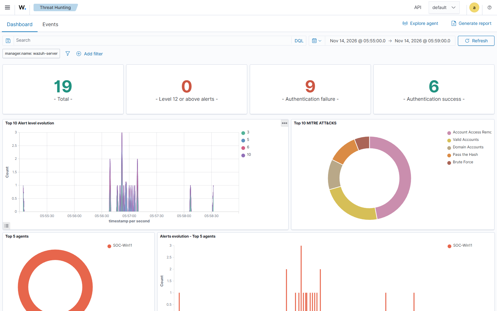
2Filtrar pelo IP de origem e ler a sequência dos eventos
Como chegar
Aba Events, com esta consulta DQL na barra de busca e o período 05:56:30 → 05:57:15:
agent.name:SOC-Win11 and data.win.eventdata.ipAddress:10.0.10.30
A consulta pede: "eventos da máquina SOC-Win11 e cujo IP de origem seja 10.0.10.30". O resultado cai de 19 para 11 hits, todos ligados ao atacante.
Como ler (de baixo para cima, do mais antigo ao mais novo)
- 05:56:39, regra 92652: login com
LOGON ANÔNIMO, NTLM V1. É a ferramenta sondando o SMB antes de testar senhas (reconhecimento). - 05:56:50 → 05:57:06, regra 60122 (nível 5): Logon Failure - Unknown user or bad password, uma a cada ~2 segundos. O gráfico de barras igualmente espaçadas mostra o ritmo automatizado.
- 05:57:04, regra 60204 (nível 10): Multiple Windows Logon Failures. Esse alerta é a 8ª falha: o Wazuh contou 8 falhas na janela de tempo e transformou aquela em alerta correlacionado.
- 05:57:09, regra 92652: Successful Remote Logon como
joao.teste. É o sucesso logo depois das falhas.
O que concluir
A sequência reconhecimento → várias falhas → um sucesso, toda da mesma origem, é a assinatura de um brute force que funcionou.
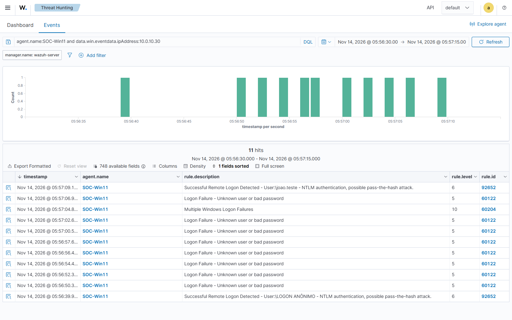
3Abrir o alerta 60204: os campos do evento Windows
Como chegar
Consulta rule.id:60204, depois clicar no ícone 🔍 à esquerda da linha. Abre o painel Document Details, aba Table: o evento original do Windows (4625) já separado em campos.
Campo a campo
| Campo | Valor | O que significa |
|---|---|---|
agent.name / agent.ip | SOC-Win11 / 10.0.10.20 | A máquina atacada, onde o agente Wazuh coletou o log. |
ipAddress / ipPort | 10.0.10.30 / 39612 | De onde veio a tentativa: o Kali. A porta alta é aleatória, do lado do cliente. |
targetUserName | joao.teste | A conta que estava sendo atacada. |
logonType | 3 | Login pela rede (SMB, compartilhamento). Teclado local seria 2; RDP seria 10. |
authenticationPackageName | NTLM | Protocolo de autenticação. NTLM é o padrão das ferramentas de ataque contra SMB. |
status | 0xC000006D | "Falha de logon": código genérico. |
subStatus | 0xC000006A | O detalhe que importa: o usuário existe, a senha está errada. Se o usuário não existisse, seria 0xC0000064. O atacante já sabia um nome válido. |
failureReason | %%2313 | Código de mensagem do Windows para "nome de usuário desconhecido ou senha incorreta". |
system.channel / eventID | Security / 4625 | Veio do log de Segurança do Windows; 4625 = "uma conta falhou ao fazer logon". |

4A regra por trás do alerta: correlação e MITRE
Como chegar
No mesmo Document Details, rolando até os campos que começam com rule..
Campo a campo
| Campo | Valor | O que significa |
|---|---|---|
rule.level | 10 | Severidade de 0 a 15. Uma falha sozinha é nível 5; a repetição sobe para 10. |
rule.frequency | 8 | A regra só dispara depois de 8 eventos parecidos na janela de tempo. Isso é correlação: o alerta não olha um evento, olha um padrão. |
rule.firedtimes | 1 | Quantas vezes a regra disparou nesse ciclo. |
previous_output | (JSON) | Os eventos anteriores que somaram para o disparo. É a "prova" da correlação. |
rule.groups | authentication_failures | Categoria usada pelo painel para contar o card "Authentication failure". |
rule.mitre.* | T1110 · Credential Access · Brute Force | Mapeamento para o MITRE ATT&CK: a tática (o objetivo do atacante) e a técnica (como ele faz). |
rule.pci_dss, gdpr, hipaa, nist_800_53, tsc | 10.2.4, 10.2.5… | Requisitos de conformidade ligados ao alerta. Em auditoria, mostram que a empresa monitora tentativas de acesso inválidas. |

5O login com sucesso: a prova do comprometimento
Como chegar
Consulta rule.id:92652 and data.win.eventdata.targetUserName:joao.teste, depois 🔍 na linha das 05:57:09.
Campo a campo
| Campo | Valor | O que significa |
|---|---|---|
ipAddress | 10.0.10.30 | O mesmo IP das 9 falhas: é o mesmo ator. |
targetUserName | joao.teste | A mesma conta que estava sendo atacada. |
logonType | 3 | Login pela rede, igual às tentativas. |
lmPackageName / keyLength | NTLM V2 / 128 | Autenticação completa. Compare com a sondagem anônima das 05:56:39 (NTLM V1, chave 0). |
elevatedToken | %%1843 ("Não") | A sessão não recebeu privilégio de administrador. |
targetLogonId | 0x1bf006 | O ID desta sessão. Com ele dá para rastrear tudo o que a sessão fez depois (e o logoff 4634 logo em seguida). |
Atenção à etiqueta
A regra 92652 descreve o evento como "possible pass-the-hash attack" (T1550.002). Os campos mostram outra coisa: houve 9 senhas erradas e depois um acerto, ou seja, a senha foi descoberta. O analista valida o contexto em vez de copiar o rótulo da regra.
O que concluir
Conta comprometida. O caso deixa de ser "tentativa" e vira incidente, que exige contenção (resetar a senha, bloquear o IP) e investigação do que a sessão 0x1bf006 fez.

The investigation path in the Wazuh dashboard, in the order a Tier 1 analyst would follow: from the overview to the alert that proves the compromise. Each step explains how to get to the screen, what each number or field means and what to conclude. Click the screenshots to enlarge.
1Overview: the Threat Hunting dashboard during the attack window
How to get there
Menu ☰ → Threat Hunting → Dashboard tab. In the time picker (📅), absolute range 2026-11-14, 05:55:00 → 05:59:00. The dashboard shows UTC−4; the report uses UTC.
What the screen shows
- 19 Total: every alert raised in those 4 minutes.
- 0 Level 12 or above: no "critical" alert. The attack does not reach the top of the severity queue. Anyone looking only at level 12+ would miss it.
- 9 Authentication failure: 9 failed logons (8 from rule 60122 + 1 that became the correlated alert 60204).
- 6 Authentication success: 4 are normal
SYSTEMlogons (rule 60106) and 2 come from rule 92652. One of them is the attacker's logon. - Top 10 Alert level evolution: the "comb" of spikes between 05:56:50 and 05:57:10 is the burst of attempts, a machine pattern, not a human one.
- Top 10 MITRE ATT&CKs: Brute Force, Valid Accounts, Pass the Hash, Domain Accounts and Account Access Removal. Some of these labels are wrong (see step 5).
What to conclude
Something concentrated and repetitive happened at 05:57. The next step is finding out where it came from.
2Filter by source IP and read the sequence of events
How to get there
Events tab, with this DQL query in the search bar and the range 05:56:30 → 05:57:15:
agent.name:SOC-Win11 and data.win.eventdata.ipAddress:10.0.10.30
The query asks for "events from the SOC-Win11 machine and whose source IP is 10.0.10.30". The result drops from 19 to 11 hits, all tied to the attacker.
How to read it (bottom to top, oldest to newest)
- 05:56:39, rule 92652: logon as
ANONYMOUS LOGON, NTLM V1. The tool probing SMB before trying passwords (reconnaissance). - 05:56:50 → 05:57:06, rule 60122 (level 5): Logon Failure - Unknown user or bad password, one every ~2 seconds. The evenly spaced bars show the automated rhythm.
- 05:57:04, rule 60204 (level 10): Multiple Windows Logon Failures. This alert is the 8th failure: Wazuh counted 8 failures within the time window and turned that one into a correlated alert.
- 05:57:09, rule 92652: Successful Remote Logon as
joao.teste. The success right after the failures.
What to conclude
The sequence reconnaissance → many failures → one success, all from the same source, is the signature of a brute force that worked.
3Open alert 60204: the Windows event fields
How to get there
Query rule.id:60204, then click the 🔍 icon on the left of the row. The Document Details panel opens on the Table tab: the original Windows event (4625) already split into fields.
Field by field
| Field | Value | What it means |
|---|---|---|
agent.name / agent.ip | SOC-Win11 / 10.0.10.20 | The attacked machine, where the Wazuh agent collected the log. |
ipAddress / ipPort | 10.0.10.30 / 39612 | Where the attempt came from: Kali. The high port is a random client-side port. |
targetUserName | joao.teste | The account under attack. |
logonType | 3 | Network logon (SMB, file sharing). Local keyboard would be 2; RDP would be 10. |
authenticationPackageName | NTLM | Authentication protocol. NTLM is the default for attack tools against SMB. |
status | 0xC000006D | "Logon failure": a generic code. |
subStatus | 0xC000006A | The detail that matters: the user exists, the password is wrong. A nonexistent user would be 0xC0000064. The attacker already knew a valid name. |
failureReason | %%2313 | Windows message code for "unknown user name or bad password". |
system.channel / eventID | Security / 4625 | From the Windows Security log; 4625 = "an account failed to log on". |
4The rule behind the alert: correlation and MITRE
How to get there
In the same Document Details, scroll down to the fields starting with rule..
Field by field
| Field | Value | What it means |
|---|---|---|
rule.level | 10 | Severity from 0 to 15. A single failure is level 5; the repetition raises it to 10. |
rule.frequency | 8 | The rule fires only after 8 similar events within the time window. That is correlation: the alert looks at a pattern, not at one event. |
rule.firedtimes | 1 | How many times the rule fired in this cycle. |
previous_output | (JSON) | The previous events that added up to the trigger. The "proof" of the correlation. |
rule.groups | authentication_failures | Category the dashboard uses to count the "Authentication failure" card. |
rule.mitre.* | T1110 · Credential Access · Brute Force | MITRE ATT&CK mapping: the tactic (the attacker's goal) and the technique (how it is done). |
rule.pci_dss, gdpr, hipaa, nist_800_53, tsc | 10.2.4, 10.2.5… | Compliance requirements tied to the alert. In an audit they show the company monitors invalid access attempts. |
5The successful logon: proof of compromise
How to get there
Query rule.id:92652 and data.win.eventdata.targetUserName:joao.teste, then 🔍 on the 05:57:09 row.
Field by field
| Field | Value | What it means |
|---|---|---|
ipAddress | 10.0.10.30 | The same IP as the 9 failures: the same actor. |
targetUserName | joao.teste | The same account that was under attack. |
logonType | 3 | Network logon, like the attempts. |
lmPackageName / keyLength | NTLM V2 / 128 | A full authentication. Compare with the anonymous probe at 05:56:39 (NTLM V1, key 0). |
elevatedToken | %%1843 ("No") | The session did not get administrator privileges. |
targetLogonId | 0x1bf006 | This session's ID. It lets you trace everything the session did afterwards (and the 4634 logoff right after). |
Watch the label
Rule 92652 describes the event as "possible pass-the-hash attack" (T1550.002). The fields tell a different story: 9 wrong passwords and then a hit, meaning the password was guessed. The analyst validates the context instead of copying the rule's label.
What to conclude
Account compromised. The case stops being an "attempt" and becomes an incident, which calls for containment (reset the password, block the IP) and investigating what session 0x1bf006 did.
Explorador de logs brutosRaw log explorer
Os documentos exatamente como estão no indexador do Wazuh. Clique numa linha para abrir o JSON completo.The documents exactly as stored in the Wazuh indexer. Click a row to open the full JSON.
| timestamp (UTC) | rule.id | lvl | event | user | src IP | rule.description |
|---|
02 · Cenário 202 · Scenario 2
PowerShell codificado: o comando escondido em Base64Encoded PowerShell: the command hidden in Base64
powershell -EncodedCommand📄 Relatório de incidente (PDF, 1 página)Incident report (PDF, 1 page, in Portuguese)
Atacantes escondem comandos PowerShell em Base64 e os executam com -EncodedCommand. Quem olha a linha de comando vê só uma sopa de letras, e filtros simples por palavra-chave não encontram nada. Neste cenário eu executei uma versão benigna dessa técnica (o comando escondido só escreve uma frase verde na tela), investiguei o alerta, decodifiquei o comando, melhorei a visibilidade do SIEM com uma regra minha e depois ajustei o ruído que ela criou. Clique em cada passo.
ℹ️ Os scripts e as regras do Wazuh foram escritos com apoio de IA. Executei, investiguei e validei cada passo no meu laboratório. Os arquivos estão no GitHub ↗.
1Executar o ataque simulado
O que fiz
Na VM Windows 11, como usuário comum (sem administrador), colei três linhas no PowerShell:
$cmd = 'Write-Host "LAB-SOC Cenario 2 ..."': o comando legível.$enc = [Convert]::ToBase64String([Text.Encoding]::Unicode.GetBytes($cmd)): converte o texto para UTF-16LE e depois para Base64.powershell.exe -EncodedCommand $enc: abre um novo PowerShell que recebe só o Base64.
Por que importa
Base64 não é criptografia: não tem chave, qualquer um reverte. É só um disfarce para a linha de comando, e é exatamente isso que o analista precisa desfazer.
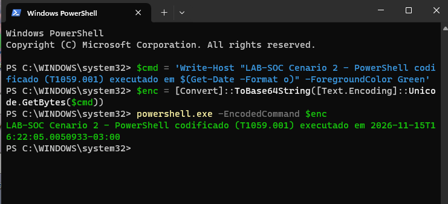
2Encontrar o alerta no meio do ruído
O que fiz
No Wazuh (Threat Hunting → Events, últimas 24 h) havia 214 eventos, quase todos normais: atualização do Defender, serviços criados, logins do sistema. Em vez de ler um por um, filtrei por severidade com rule.level >= 12, e a lista caiu para 5 alertas.
Por que importa
Um analista N1 recebe centenas de eventos por hora. Começar pelo que é mais grave é a primeira habilidade de triagem.
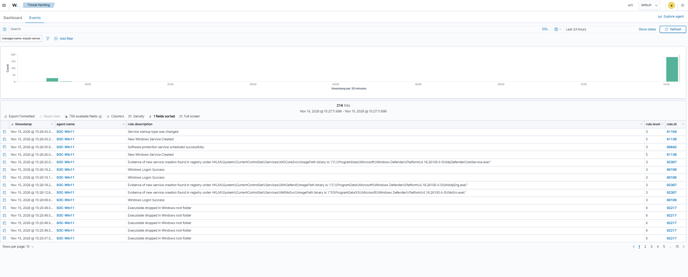
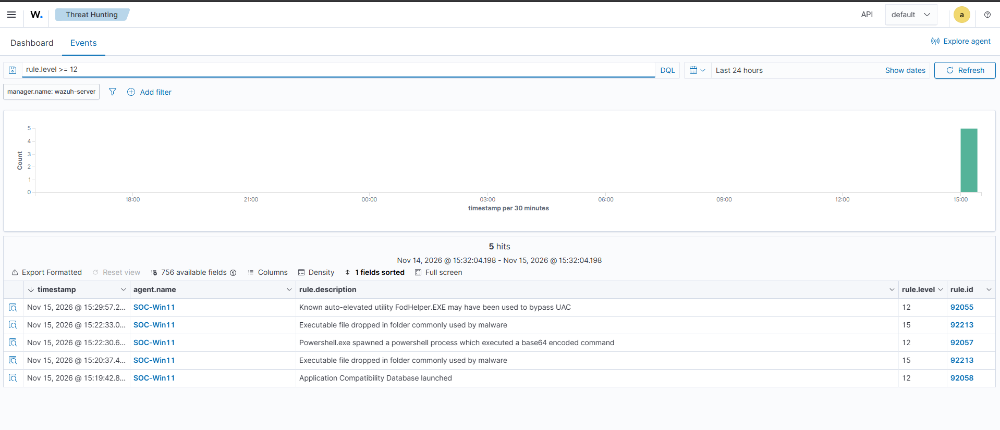
rule.level >= 12: 5 alertas para triar.3Ler o alerta 92057: o que ele mostra e o que ele esconde
O que encontrei
- Regra 92057, nível 12: "Powershell.exe spawned a powershell process which executed a base64 encoded command", MITRE T1059.001.
commandLine:powershell.exe -EncodedCommand VwByAGkAdABlAC0ASABv…. O comando real continua escondido.parentImage:powershell.exe. Um PowerShell abriu outro PowerShell.integrityLevel: Medium. Rodou como usuário comum, sem privilégio de administrador.
Por que importa
O alerta mostra o comportamento suspeito, mas não o conteúdo. Para decidir se é grave, preciso saber o que estava escondido.
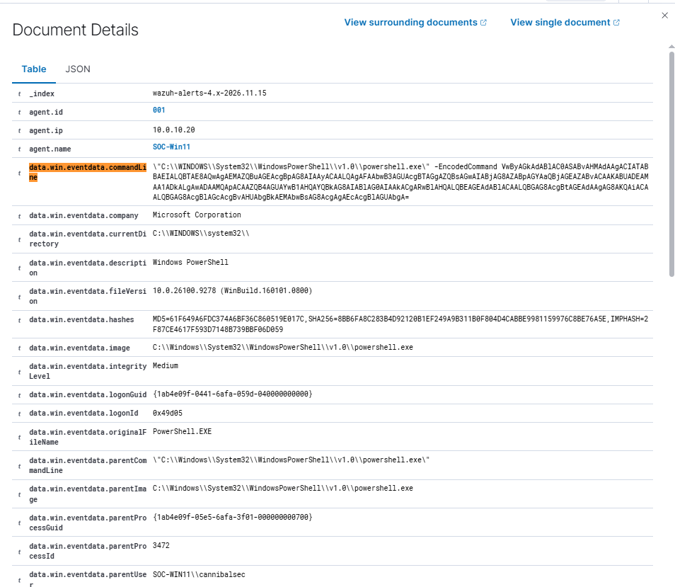
commandLine, o pai powershell.exe e a integridade Medium.4Decodificar o Base64 à mão
O que fiz
Copiei o Base64 do alerta e o decodifiquei no PowerShell, fazendo o caminho inverso: [Text.Encoding]::Unicode.GetString([Convert]::FromBase64String('…')). Apareceu o Write-Host "LAB-SOC Cenario 2 …" original.
Por que Unicode e não UTF8?
O -EncodedCommand exige texto em UTF-16LE, que o .NET chama de Unicode. Por isso o Base64 tem tantos A: cada letra vira dois bytes, e o segundo é zero.
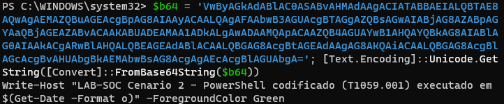
Write-Host.5Melhorar a visibilidade: ativar o evento 4104
O problema
Decodificar à mão funciona com um alerta. Com cem, não. E um atacante pode codificar em camadas.
O que fiz
- Ativei o Script Block Logging do PowerShell (registro
EnableScriptBlockLogging = 1). Com ele, o Windows grava o evento 4104 com o código que o PowerShell vai executar, já decodificado. - Fiz o agente Wazuh ler o canal
Microsoft-Windows-PowerShell/Operational(com backup doossec.confantes) e reiniciei o agente.
Por que funciona
O PowerShell não consegue executar Base64. Ele precisa decodificar na memória primeiro, e é nesse momento que o 4104 registra o código.
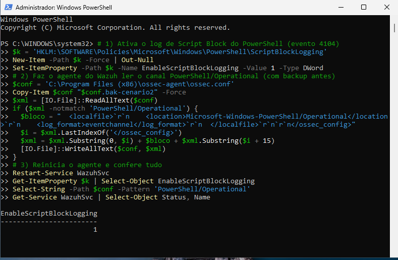
6Criar a regra personalizada 100210
O problema
O Wazuh já reconhece o 4104 (regra oficial 91802), mas com nível 0: o evento chega e não vira alerta.
O que fiz
Adicionei no local_rules.xml a regra 100210 (IDs acima de 100000 são reservados para regras próprias), "filha" da 91802 via <if_sid>, com nível 4 e MITRE T1059.001. Salvei, recarreguei o manager e conferi pela API que ela carregou sem erros.
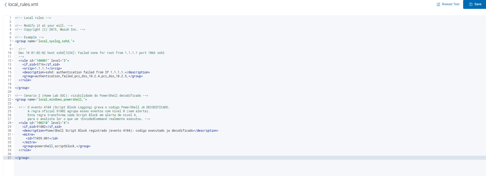
local_rules.xml.7Repetir o ataque e ligar os eventos pelo PID
O que fiz
Executei o mesmo ataque de novo e coloquei lado a lado as colunas scriptBlockText, commandLine e parentProcessId. Lendo de baixo para cima (UTC, horário do evento):
| Horário | Regra | PID | O que foi registrado |
|---|---|---|---|
| 21:07:12.135 | 100210 | 5572 | powershell.exe -EncodedCommand $enc |
| 21:07:12.336 | 92057 | 1048 (pai 5572) | novo PowerShell com o Base64 |
| 21:07:14.299 | 100210 | 1048 | Write-Host "LAB-SOC Cenario 2 …": já decodificado |
O que isso prova
O 5572 é o PowerShell onde colei os comandos (o pai). O 1048 é o filho criado com o Base64, que registrou o código decodificado. Essa correlação por PID monta a árvore de processos. Num caso real, se o pai fosse o WINWORD.EXE, seria forte indício de documento com macro maliciosa.
Os alertas chegaram ao índice cerca de 3 minutos depois do evento. Por isso o horário do relatório vem de data.win.system.systemTime, não do @timestamp.
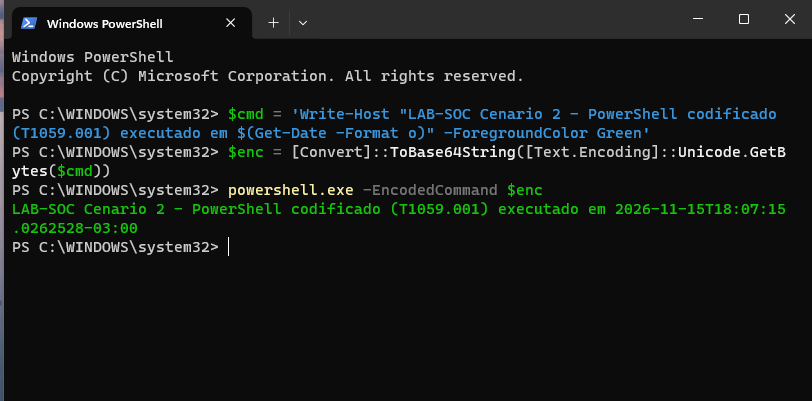
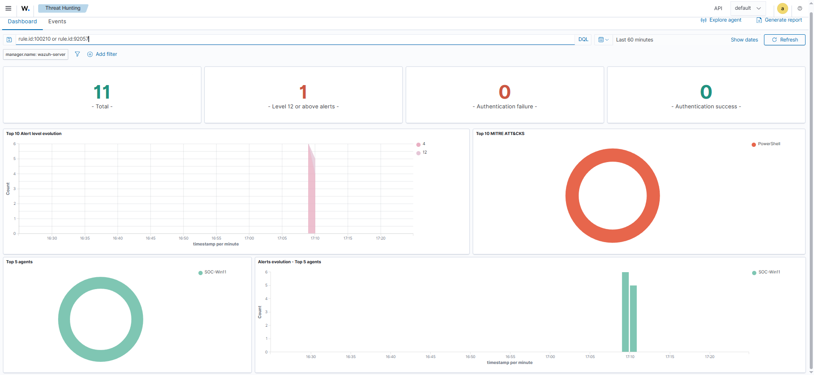
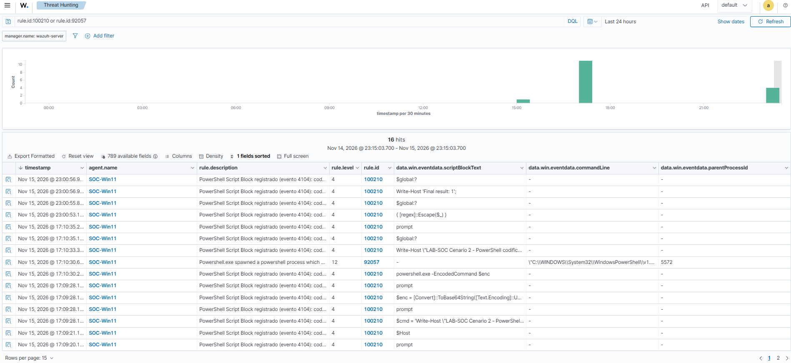
8Tuning: silenciar o ruído sem criar ponto cego
O problema
Com a 100210 ativa, todo script block vira alerta, inclusive o que o próprio console executa a cada comando: prompt, $global:?, $Host. No boot também apareceram PowerShells do SYSTEM executando trechos inofensivos e criando __PSScriptPolicyTest_*.ps1.
Um erro de raciocínio que corrigi
Minha primeira resposta foi "não é ataque porque rodou sozinho, sem o usuário confirmar". A conclusão estava certa, mas o motivo não: persistência de atacante também roda sozinha, no boot, como SYSTEM. O que fecha o caso é a evidência: o conteúdo inofensivo (sem download, rede ou Base64) e um padrão conhecido do próprio PowerShell.
O que fiz
Criei a regra 100211, nível 0 (não gera alerta), filha da 100210, com a expressão ^\s*(?:prompt|\$global:\?|\$Host)\s*$. Os ^ e $ exigem que o texto inteiro seja exatamente um desses três: um código malicioso que só contenha a palavra prompt continua alertando.
Validação
Abri um PowerShell novo e rodei whoami e Get-Date. Os dois continuaram gerando o 100210, e os prompt / $global:? que antes acompanhavam cada comando sumiram. O ruído que ainda aparece ($this.DisplayHint, Set-Alias … Cim…) ficou documentado e não foi filtrado: tuning é contínuo e só se filtra o que foi comprovado.
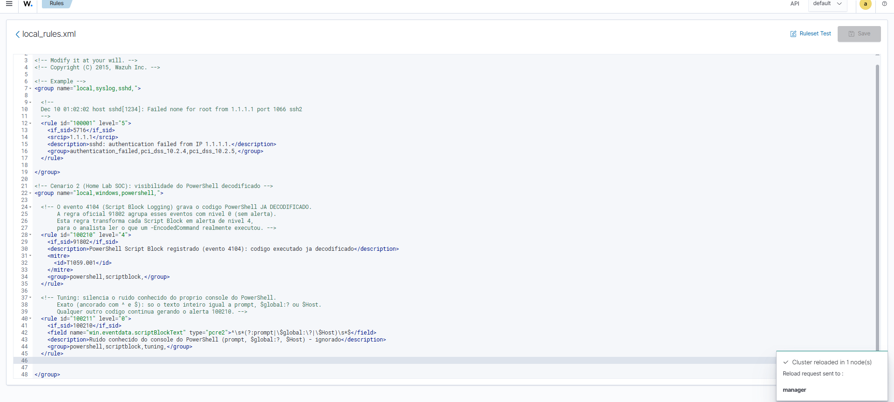
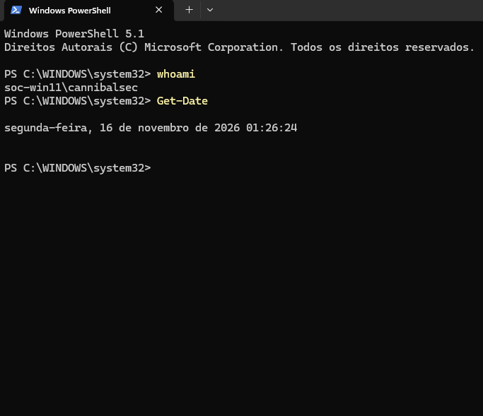
whoami e Get-Date.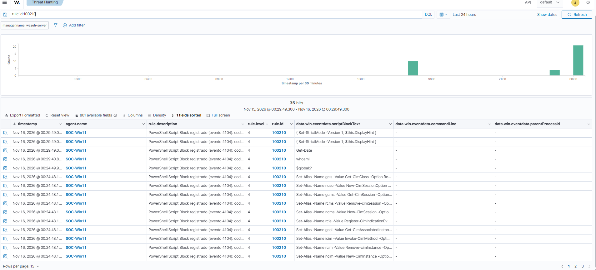
prompt e o $global:?, não.Triagem dos outros alertas graves da janela
| Regra | Nível | O que era | Veredito |
|---|---|---|---|
| 92057 | 12 | O PowerShell codificado simulado. | Atividade simulada |
| 92213 | 15 | __PSScriptPolicyTest_*.ps1 criado pelo PowerShell do usuário: é o teste de política de execução que o próprio PowerShell faz ao iniciar. | Falso positivo |
| 92058 | 12 | sdbinst.exe como SYSTEM, iniciado pelo serviço de Compatibilidade de Programas (PcaSvc), repetindo ao longo do dia. | Falso positivo |
| 92055 | 12 | FodHelper.exe -Embedding com pai svchost -k DcomLaunch e sem alteração de registro em ms-settings/DelegateExecute, que é o que o bypass de UAC usa. | Provável falso positivo: não consegui confirmar se as Configurações do Windows foram abertas nesse horário. |
⚠️ O que aprendi
- O Sysmon me diz que um PowerShell executou código escondido; o Script Block Logging me diz qual foi o código. Os dois se completam.
- O PID liga fontes diferentes (Sysmon e PowerShell) numa mesma história.
- Horário do evento ≠ horário do alerta. Aqui houve ~3 min de atraso de ingestão.
- Descartar um alerta exige evidência, não suposição sobre como ataques "costumam" ser.
🛡️ Se fosse real
- Decodificar e ler o código (4104) antes de qualquer decisão.
- Montar a árvore de processos: quem é o pai? Word, navegador, tarefa agendada?
- Procurar o que veio depois: conexões de rede, arquivos criados, novos serviços.
- Conter a máquina se o código baixar ou executar algo, e escalar para o N2.
Attackers hide PowerShell commands in Base64 and run them with -EncodedCommand. Anyone reading the command line sees only a jumble of letters, and simple keyword filters find nothing. In this scenario I ran a benign version of the technique (the hidden command only prints a green sentence), investigated the alert, decoded the command, improved the SIEM's visibility with a rule of my own and then tuned the noise it created. Click each step.
ℹ️ The scripts and Wazuh rules were written with AI assistance. I ran, investigated and validated every step in my lab. The files are on GitHub ↗.
1Run the simulated attack
What I did
On the Windows 11 VM, as a standard user (no admin), I pasted three lines into PowerShell:
$cmd = 'Write-Host "LAB-SOC Cenario 2 ..."': the readable command.$enc = [Convert]::ToBase64String([Text.Encoding]::Unicode.GetBytes($cmd)): converts the text to UTF-16LE and then to Base64.powershell.exe -EncodedCommand $enc: starts a new PowerShell that receives only the Base64.
Why it matters
Base64 is not encryption: there is no key and anyone can reverse it. It only disguises the command line, and that is exactly what the analyst has to undo.
2Find the alert in the noise
What I did
In Wazuh (Threat Hunting → Events, last 24 h) there were 214 events, nearly all normal: Defender updates, services created, system logons. Instead of reading them one by one, I filtered by severity with rule.level >= 12, and the list dropped to 5 alerts.
Why it matters
A Tier 1 analyst gets hundreds of events per hour. Starting with the most severe is the first triage skill.
rule.level >= 12: 5 alerts to triage.3Read alert 92057: what it shows and what it hides
What I found
- Rule 92057, level 12: "Powershell.exe spawned a powershell process which executed a base64 encoded command", MITRE T1059.001.
commandLine:powershell.exe -EncodedCommand VwByAGkAdABlAC0ASABv…. The real command is still hidden.parentImage:powershell.exe. A PowerShell started another PowerShell.integrityLevel: Medium. It ran as a standard user, without admin rights.
Why it matters
The alert shows the suspicious behavior, not the content. To judge severity I need to know what was hidden.
commandLine, the powershell.exe parent and Medium integrity.4Decode the Base64 by hand
What I did
I copied the Base64 from the alert and decoded it in PowerShell, doing the reverse path: [Text.Encoding]::Unicode.GetString([Convert]::FromBase64String('…')). The original Write-Host "LAB-SOC Cenario 2 …" appeared.
Why Unicode and not UTF8?
-EncodedCommand requires UTF-16LE text, which .NET calls Unicode. That is why the Base64 has so many As: each letter takes two bytes, and the second one is zero.
Write-Host.5Improve visibility: enable event 4104
The problem
Decoding by hand works for one alert, not for a hundred. And an attacker can encode in layers.
What I did
- I enabled PowerShell Script Block Logging (registry
EnableScriptBlockLogging = 1). With it, Windows writes event 4104 with the code PowerShell is about to run, already decoded. - I made the Wazuh agent read the
Microsoft-Windows-PowerShell/Operationalchannel (backing upossec.conffirst) and restarted the agent.
Why it works
PowerShell cannot execute Base64. It has to decode it in memory first, and that is when 4104 records the code.
6Write custom rule 100210
The problem
Wazuh already recognizes 4104 (built-in rule 91802), but at level 0: the event arrives and never becomes an alert.
What I did
I added rule 100210 to local_rules.xml (IDs above 100000 are reserved for custom rules) as a "child" of 91802 via <if_sid>, with level 4 and MITRE T1059.001. I saved it, reloaded the manager and checked through the API that it loaded without errors.
local_rules.xml.7Repeat the attack and link the events by PID
What I did
I ran the same attack again and put the scriptBlockText, commandLine and parentProcessId columns side by side. Reading bottom to top (UTC, event time):
| Time | Rule | PID | What was recorded |
|---|---|---|---|
| 21:07:12.135 | 100210 | 5572 | powershell.exe -EncodedCommand $enc |
| 21:07:12.336 | 92057 | 1048 (parent 5572) | new PowerShell with the Base64 |
| 21:07:14.299 | 100210 | 1048 | Write-Host "LAB-SOC Cenario 2 …": already decoded |
What this proves
5572 is the PowerShell where I pasted the commands (the parent). 1048 is the child started with the Base64, which recorded the decoded code. This PID correlation builds the process tree. In a real case, if the parent were WINWORD.EXE, that would strongly suggest a malicious macro document.
The alerts reached the index about 3 minutes after the event. That is why the report uses data.win.system.systemTime rather than @timestamp.
8Tuning: silence the noise without creating a blind spot
The problem
With 100210 active, every script block becomes an alert, including what the console itself runs after each command: prompt, $global:?, $Host. At boot, SYSTEM PowerShells also ran harmless snippets and created __PSScriptPolicyTest_*.ps1.
A reasoning mistake I corrected
My first answer was "it's not an attack because it ran by itself, without the user confirming". The conclusion was right, but the reason was not: attacker persistence also runs by itself, at boot, as SYSTEM. What closes the case is evidence: the harmless content (no download, network or Base64) and a known pattern of PowerShell itself.
What I did
I created rule 100211, level 0 (no alert), a child of 100210, with the expression ^\s*(?:prompt|\$global:\?|\$Host)\s*$. The ^ and $ require the whole text to be exactly one of those three: malicious code that merely contains the word prompt still alerts.
Validation
I opened a new PowerShell and ran whoami and Get-Date. Both still raised 100210, and the prompt / $global:? that used to follow every command were gone. The remaining noise ($this.DisplayHint, Set-Alias … Cim…) was documented and not filtered: tuning is ongoing, and only what has been proven benign gets filtered.
whoami and Get-Date.prompt and $global:? don't.Triage of the other high-severity alerts in the window
| Rule | Level | What it was | Verdict |
|---|---|---|---|
| 92057 | 12 | The simulated encoded PowerShell. | Simulated activity |
| 92213 | 15 | __PSScriptPolicyTest_*.ps1 created by the user's PowerShell: the execution-policy test PowerShell itself runs at startup. | False positive |
| 92058 | 12 | sdbinst.exe as SYSTEM, started by the Program Compatibility service (PcaSvc), recurring throughout the day. | False positive |
| 92055 | 12 | FodHelper.exe -Embedding with parent svchost -k DcomLaunch and no ms-settings/DelegateExecute registry change, which is what the UAC bypass relies on. | Probable false positive: I could not confirm whether Windows Settings was opened at that time. |
⚠️ What I learned
- Sysmon tells me that a PowerShell ran hidden code; Script Block Logging tells me which code. They complement each other.
- The PID links different sources (Sysmon and PowerShell) into one story.
- Event time ≠ alert time. There was ~3 min of ingestion lag here.
- Dismissing an alert takes evidence, not assumptions about what attacks "usually" look like.
🛡️ If it were real
- Decode and read the code (4104) before any decision.
- Build the process tree: who is the parent? Word, a browser, a scheduled task?
- Look at what came next: network connections, files created, new services.
- Contain the host if the code downloads or runs anything, and escalate to Tier 2.